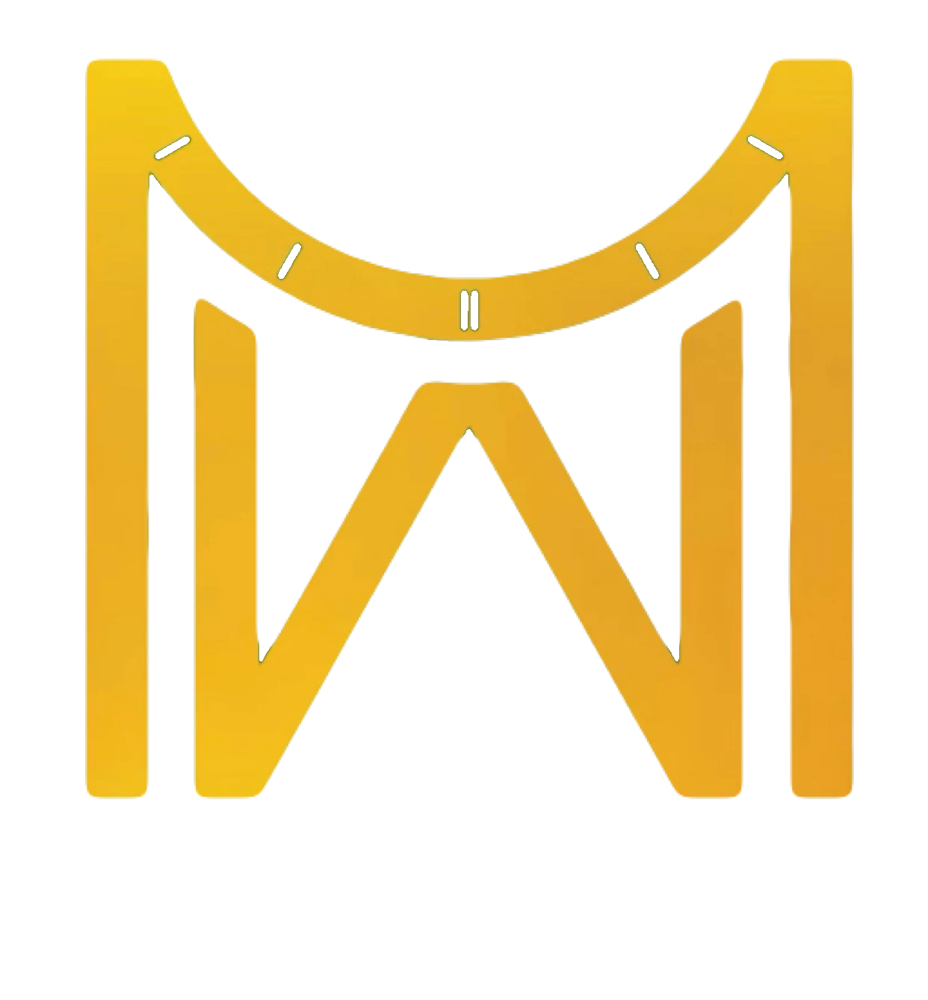

⚙
⚙

MOURIS WATCH
هر ساعت، داستانی دارد...
به گالری ساعت موریس خوش آمدید
هر ساعت، داستانی دارد... ما آن را دوباره به حرکت در میآوریم
پذیرش تعمیرات
ثبت مشخصات ساعت و شرح ایراد برای بررسی تخصصی
سفارش جدید
ثبت درخواست تهیه ساعت یا محصول موردنظر